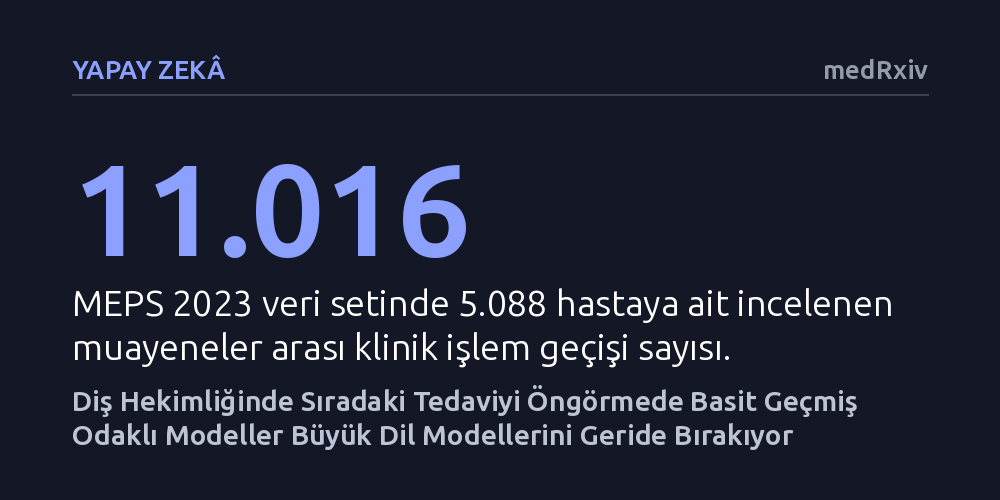

YAPAY-ZEKA · medRxiv · 2026-10-12
Araştırmacılar, diş hekimliğinde sıradaki tedavi adımını tahmin etmede büyük dil modelleri ile klasik makine öğrenmesi modellerini karşılaştırdı. Hasta geçmişine dayalı basit modellerin dil modellerini geride bıraktığı ve hata olasılıklarını daha güvenilir biçimde derecelendirdiği saptandı.
Klinik kararlarda her zaman devasa dil modellerine ihtiyaç olmadığını, iyi yapılandırılmış hasta geçmişiyle çalışan sade algoritmaların hekimler için daha doğru ve güvenilir bir karar desteği sunabileceğini gösteriyor.

Diş hekimliğinde geliştirilen ticari yapay zeka sistemleri günümüzde neredeyse tamamen radyografi analizi ve çürük tespiti gibi tanı koyma aşamalarına odaklanmaktadır. Ancak klinikteki hekimler için asıl zorlu karar süreci genellikle tanı konulduktan hemen sonra başlamaktadır: Hastanın geçmiş kayıtları ve en son uygulanan prosedür dikkate alındığında, bir sonraki adımda hangi tedavi uygulanmalıdır? Teşhis ile tedavi planının sıralanması arasındaki bu ayrım, hekimin zaman yönetimini ve tedavinin başarısını doğrudan etkilemektedir.
Mevcut karar destek yaklaşımları, önerdikleri tedavinin ne kadar kesin olduğunu bildirmemekte ve belirsizlik anlarında çekimser kalmayı başaramamaktadır. Bir klinik ortamda yapay zekanın hatalı bir öneriyi kesin bir dille sunması ciddi riskler barındırmaktadır. Bu nedenle araştırmacılar, sıradaki işlem kodunu tahmin ederken hem istatistiksel olarak kalibre edilmiş olasılıklar sunan hem de gerektiğinde karar vermekten kaçınabilen güvenilir bir öneri modelinin mümkün olup olmadığını araştırmıştır.
Araştırma ekibi bu doğrultuda DentaCoPilot adını verdikleri bir öneri sistemi geliştirmiştir. Sistem, Amerikan Diş Hekimleri Birliği'nin güncel işlem kodları üzerinde olasılık dağılımı üretmekte, gerekçeli bir klinik açıklama sunmakta ve güven düzeyi yetersiz kaldığında açık bir çekimserlik bayrağı vermektedir. Çalışmada dört klasik makine öğrenmesi modeli ile altı farklı büyük dil modeli (LLM) mimarisi titizlikle karşılaştırılmıştır.
Araştırmacılar modelleri önce kontrollü sentetik bir değerlendirme ortamında sınamış, ardından modellerin klinik geçerliliğini test etmek için ABD'deki 5.088 hastaya ait 11.016 muayene geçişini içeren MEPS 2023 kamu veri tabanından yararlanmıştır. Bu analizlerde modellerin hem ilk sıradaki tahmin doğruluğu (top-1) hem de güven düzeylerinin gerçekle ne kadar örtüştüğünü gösteren kalibrasyon hatası ölçülmüştür.
Sentetik veriler üzerindeki testlerde, geçmiş işlem sıklığına dayanan klasik temel modeller 0,567 ilk sıra doğruluğuna ulaşırken, doğrudan sorgulanan büyük dil modelleri 0,267 ile 0,467 arasında kalarak belirgin şekilde geride kalmıştır. Üstelik dil modelinin omurgasını Sonnet modelinden daha büyük olan Opus modeline yükseltmek de bu sonucu değiştirmemiştir. Dil modelleri, ancak klasik modelin ürettiği aday listesiyle yönlendirildiklerinde bu farkı kapatabilmiştir.
Gerçek dünyayı temsil eden MEPS veri tabanında yapılan incelemede de benzer bir tablo ortaya çıkmıştır. Hasta geçmişini hesaba katan klasik bir model 0,479 ilk sıra doğruluğuna ve 0,031 gibi son derece düşük bir kalibrasyon hatasına ulaşırken, en sık yapılan işlemi öneren temel model 0,297 seviyesinde kalmıştır. Yalnızca kaba işlem geçmişi verilen bir dil modeli ise sıfır örnekli değerlendirmede klasik modele yenilmiştir. Bu bulgu, dil modellerinin değerinin salt işlem geçmişinden değil, zengin ve yapılandırılmamış hasta dosyalarının bütününden kaynaklanabileceğini göstermektedir.
Elde edilen sonuçlar, tıp ve diş hekimliğinde her klinik sorunu doğrudan devasa dil modelleriyle çözme hevesine karşı önemli bir gerçeklik kontrolü sağlamaktadır. Yapılandırılmış ve ardışık geçmiş verilerinde, iyi tasarlanmış klasik istatistiksel modeller hem daha yüksek doğruluk sağlamakta hem de matematiksel olarak güvence altına alınmış hata sınırları çizebilmektedir. Dil modellerinin kendi hatalarını doğru biçimde sıralamakta ve güven düzeylerini ayarlamakta zorlanması, klinikte tek başlarına karar verici olamayacaklarını açıkça ortaya koymaktadır.
Yazarlar, iki yaklaşımın güçlü yanlarını birleştiren hibrit bir yapının en gerçekçi çözüm olduğunu vurgulamaktadır: Sıradaki işlem adaylarını belirleme ve olasılıkları hesaplama görevini klasik modeller üstlenirken, dil modelleri hekime gerekçeleri açıklama ve hasta notlarını yorumlama aşamasında devreye girmelidir. Böylece hekimler, aşırı iddialı ama yanıltıcı öneriler yerine, ne zaman güveneceğini ve ne zaman hekim sezgisine başvuracağını açıkça belirten şeffaf bir asistan desteği alabilecektir.